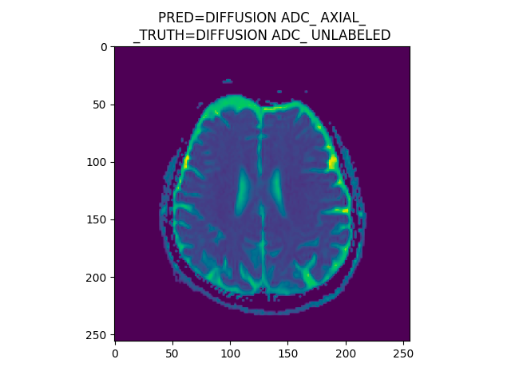
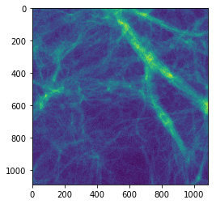
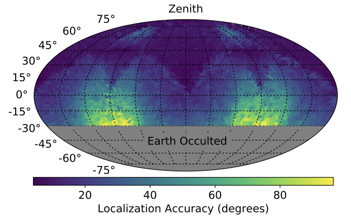

I am currently a research assistant at NYU Langone and the Simon's Foundation. My work at Langone is supported by the Moore Sloan Data Science Environment. In these roles I use my passion for data science and machine learning to accelerate the construction of cosmological simulations, and automate the annotation process of MRIs.
A practical DL-based tool for medical image specifications identification

This summer (2020), I have been developing an automated method to classify medical images based on image specifications including anatomic body part, image sequence, and plane of imaging. The goal of this work is to will employ a deep learning-based convolutional neural network to sort radiological imaging studies based on these image specifications.
dm2gal

In recent years, there has been significant interest and progress in using machine learning to create cosmological simulations. While traditional methods take millions of CPU hours, machine learning models are capable or creating near identical simulations in a fraction of the time. In this work, I use a deep learning model to predict stellar mass from dark matter structure.
BurstCube

The discovery of gravitational waves has ushered in a new era of astronomy. Tied to this discovery is the potential for multi-messenger astronomy, or the observation of this phenomena in the form of graviational waves, and in the form of electromagnetic radiation. This is just one part of the science mission of BurstCube, a cubesat for gamma-ray bursts. In my time working on BurstCube, I created a simulation from scratch to assess different detector orientations, and determine what setting is most suitable for BurstCube's science.